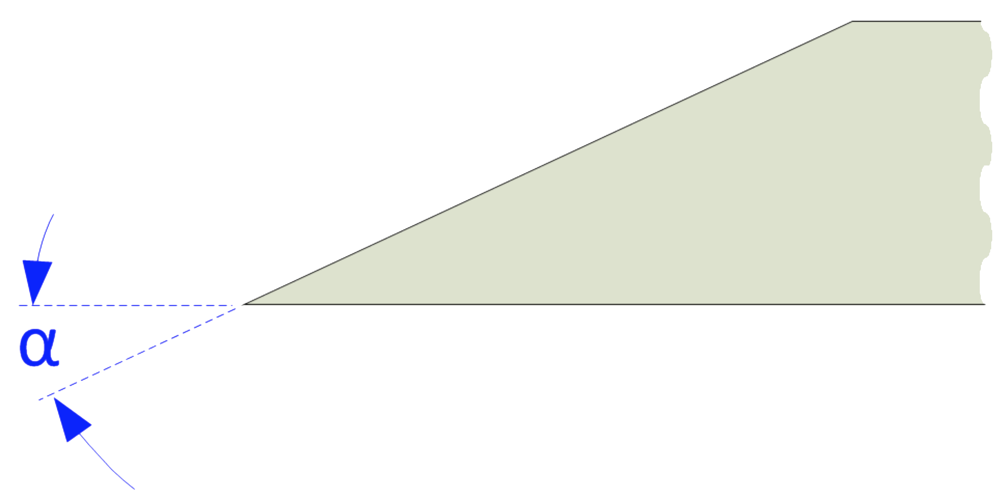

|
|
|
Bedan |
|

Edge Angle
|
As the points of the Bedan are used when this tool is employed, these must be the focus of the sharpening activity.
When honing, I use a 1,000 grit diamond stone to touch up the left & right sides, and the bottom.

Edges to be honed
|
General Guidelines |
||||
|---|---|---|---|---|
| α |
SVS-50 |
Comments |
||
|
JS |
P |
Hole |
||
| 45° | 0° | 55 mm | B | Use the open seat on the Tormek SVS-50. |